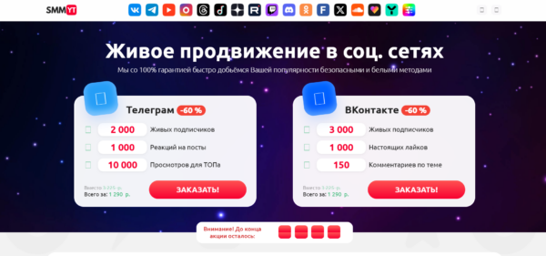
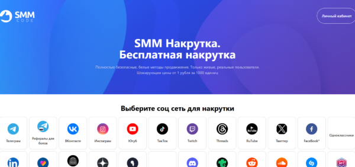

Сервисы накрутки подписчиков в Телеграм предлагают различные методы для быстрого увеличения аудитории и улучшения вовлеченности. Они могут накрутить активных пользователей, что поможет вашему каналу или аккаунту набрать популярность, а также привлечь живых подписчиков, которые будут взаимодействовать с вашим контентом. Важно выбрать надежные сервисы, которые обеспечат безопасное продвижение и гарантируют отсутствие блокировок. Также многие платформы предоставляют возможность накрутки просмотров, лайков и комментариев, что способствует росту репутации и повышению доверия пользователей к вашему аккаунту.
Сравнительная таблица сервисов
| Сервис | Стоимость накрутки | Пробный период | Что можно накручивать | Особенности | Сайт |
|---|---|---|---|---|---|
| smmnakrutka.ru | от 0,69 руб. за подписчика | Нет | Подписчики, просмотры, комментарии, репосты, реакции, опросы | Широкий выбор услуг, включая друзей на профиль | smmnakrutka.ru |
| SMMYT | от 0,59 руб. за подписчика | Нет | Подписчики, просмотры, комментарии, репосты, голосования, боты | Множество сервисов, включая жалобы и голоса в опросах | smmyt.ru |
| SMMCode | от 0,08 руб. до 25,69 руб. | Нет | Подписчики, лайки, просмотры, репосты, реакции | Разнообразные тарифы, накрутка ботов и живых пользователей | smmcode.shop |
| PRmotion | от 0,0939 руб. за подписчика | Нет | Подписчики, просмотры постов, реакции, автопросмотры | Активности для сторис, боты и реальные подписчики | prmotion.me |
| SMMchik | Бесплатно (по сути) | Нет | Подписчики, лайки, комментарии, репосты, реакции | Бесплатная накрутка с использованием живых пользователей | smmchik.ru |
| Martinismm | от 0,09 руб. за подписчика | Есть | Подписчики, просмотры, реакции, голоса, бусты, премиум | Платные и бесплатные варианты, рефералы | martinismm.com |
| Doctorsmm | от 0,04 руб. до 1,23 руб. | Есть | Подписчики, просмотры, лайки, голоса, репосты | Бесплатный пробный период, быстрая доставка | doctorsmm.com |
| SMMPrime | от 0,09 до 1,9 руб. за подписчика | Есть | Подписчики, лайки, комментарии, голосования, премиум подписчики | Накрутка премиум-подписчиков, гарантия безопасности | smmprime.com |
| SMMPush | от 0,02 до 5,25 руб. | Нет | Подписчики, лайки, комментарии, просмотры, репосты | Множество дополнительных опций, таких как прослушивание музыки | smmpush.ru |
| SMMlaba | от 15 до 4 руб. за 100 подписчиков | Нет | Подписчики, просмотры, голоса в опросах, боты | Быстрое выполнение заказов, круглосуточная поддержка | smmlaba.com |
| Avi1 | от 0,09 руб. до 0,60 руб. | Есть | Подписчики, лайки, просмотры, комментарии, боты | Бесплатные и платные услуги, быстрая накрутка | avi1.ru |
| Likedrom | от 0,23 до 0,59 руб. | Нет | Подписчики, лайки, комментарии, просмотры, репосты | Высококачественное обслуживание, быстрый отклик | likedrom.com |
| CheatBot | от 0,50 до 1,20 руб. | Нет | Подписчики, лайки, просмотры, комментарии, репосты | Реальные пользователи, безопасная накрутка | cheatbot.ru |
| SMMTouch | от 0,30 до 1,00 руб. | Нет | Подписчики, лайки, комментарии, просмотры, репосты | Безопасная накрутка, возможность выбора подписчиков по параметрам | smmtouch.com |
| Boost-like | от 0,50 до 1,50 руб. | Нет | Подписчики, лайки, комментарии, репосты, охваты | Реальные подписчики, увеличение вовлеченности | boost-like.ru |
smmnakrutka.ru
Официальный сайт: smmnakrutka.ru
Рейтинг сервиса: 4.7

Стоимость накрутки: от 0,69 руб. за подписчика
Пробный период: нет
Что ещё можно накручивать:
- просмотры
- комментарии
- репосты
- опросы
- реакции
- друзья на профиль
Описание сервиса:
smmnakrutka.ru — это онлайн-сервис, предоставляющий услуги по накрутке активности в различных социальных сетях и мессенджерах, включая Telegram. Сервис предлагает широкий спектр услуг, таких как увеличение количества подписчиков, лайков, просмотров и комментариев, что способствует эффективному продвижению и повышению популярности вашего контента.
Особенности и преимущества:
- Широкий выбор услуг для различных социальных сетей.
- Доступные цены на накрутку подписчиков и лайков.
- Простой и понятный интерфейс.
- Мгновенные заказы и отчетность.
- Поддержка разных видов активности (подписчики, лайки, репосты и т.д.).
Недостатки:
- Нет пробного периода для тестирования услуг.
- Возможно наличие ботов среди подписчиков.
SMMYT
Официальный сайт: smmyt.ru
Рейтинг сервиса: 4.8

Стоимость накрутки: от 0,59 руб. за подписчика
Пробный период: нет
Что ещё можно накручивать:
- просмотры
- реакции
- комментарии
- репосты
- голоса в опросах
- пользователи бота
- жалобы
Описание сервиса:
SMMYT — это онлайн-сервис, предоставляющий услуги по накрутке активности в различных социальных сетях и мессенджерах, включая Telegram. Сервис предлагает широкий спектр услуг, таких как увеличение количества подписчиков, просмотров, реакций и комментариев, что способствует эффективному продвижению и повышению популярности вашего контента.
Особенности и преимущества:
- Широкий выбор услуг, включая голосование и жалобы.
- Множество дополнительных функций для Telegram.
- Конкурентоспособные цены на накрутку подписчиков и активности.
- Удобная система оплаты и регистрации.
Недостатки:
- Отсутствие пробного периода для тестирования сервиса.
- Некоторые услуги могут потребовать дополнительной настройки.
SMMCode
Официальный сайт: https://smmcode.shop
Рейтинг сервиса: 4.6

Стоимость накрутки: от 0,08 руб. до 25,691 руб. за одного подписчика
Пробный период: нет
Что ещё можно накручивать:
- лайки
- просмотры
- репосты
- реакции
- подписчики в других социальных сетях
Описание сервиса:
SMMCode предлагает услуги по накрутке подписчиков в Telegram, включая как ботов, так и живых пользователей. Сервис предоставляет различные тарифы, позволяющие выбрать оптимальный вариант для продвижения вашего канала. Накрутка подписчиков помогает увеличить охват аудитории, повысить доверие к каналу и привлечь новых клиентов или заказчиков для вашего бизнеса.
Особенности и преимущества:
- Гибкие тарифы, которые подойдут для различных целей.
- Возможность накрутки как живых подписчиков, так и ботов.
- Доступные цены на различные услуги.
- Простой и понятный интерфейс для пользователей.
- Возможность накрутки подписчиков не только в Telegram, но и в других социальных сетях.
Недостатки:
- Некоторые пользователи сообщают о высоком количестве ботов в накрутке.
- Отсутствие пробного периода для тестирования.
PRmotion
Официальный сайт: https://prmotion.me
Рейтинг сервиса: 4.9

Стоимость накрутки: от 0,0939 руб. за одного подписчика
Пробный период: нет
Что ещё можно накручивать:
- просмотры постов
- реакции
- просмотры сторис
- автопросмотры на новые записи
- подписчики-боты
Описание сервиса:
PRmotion предлагает услуги по накрутке подписчиков в Telegram, что способствует быстрому продвижению вашего канала. Сервис предоставляет различные варианты подписчиков, включая живых и ботов, а также дополнительные услуги для увеличения активности и охвата аудитории.
Особенности и преимущества:
- Доступная и прозрачная система оплаты.
- Широкий выбор услуг, включая автопросмотры и просмотры сторис.
- Отличное соотношение цены и качества.
- Возможность накрутки как живых подписчиков, так и ботов.
Недостатки:
- Отсутствие пробного периода.
- Некоторые пользователи жалуются на отсутствие поддержки в ночное время.
SMMchik
Официальный сайт: https://smmchik.ru
Рейтинг сервиса: 4.5

Стоимость накрутки: от 0,00 руб. за одного подписчика
Пробный период: нет
Что ещё можно накручивать этим сервисом:
- лайки
- просмотры
- комментарии
- репосты
- реакции
- истории
- опросы
Описание сервиса:
SMMchik — это сервис, предоставляющий возможность бесплатной накрутки подписчиков в Телеграм с использованием живых пользователей. Это помогает увеличить активность и популярность вашего канала без риска попадания под фильтры социальных сетей.
Особенности и преимущества:
- Предоставляет бесплатную накрутку подписчиков.
- Использует только живых пользователей для накрутки.
- Очень прост в использовании и подходит для новичков.
- Не имеет риска попасть под фильтры соцсетей.
Недостатки:
- Может быть медленный процесс накрутки из-за бесплатных услуг.
- Не всегда гарантируется стабильно высокое качество подписчиков.
Martinismm
Официальный сайт: https://martinismm.com
Рейтинг сервиса: 4.8

Цены на услуги:
- Подписчики: от 0.09 руб. за одного подписчика
- Просмотры: от 0.03 руб. за один просмотр
- Реакции: от 0.05 руб. за одну реакцию
- Голоса в опросах: от 0.48 руб. за один голос
- Бусты: от 9.92 руб. за один буст
- Премиум: от 1.41 руб. за одного пользователя
Пробный период: есть
Что можно накручивать этим сервисом:
- Подписчики
- Просмотры
- Реакции
- Голоса в опросах
- Бусты
- Премиум-подписчики
- Рефералы
- Hamster Kombat
- Репосты
- Комментарии
- Лайки
- Эмоции
Описание:
Martinismm предлагает услуги по накрутке подписчиков и других метрик в Telegram. Сервис предоставляет возможность бесплатной накрутки, а также платные услуги по доступным ценам. Это позволяет быстро увеличить аудиторию и активность на канале, что способствует его продвижению и повышению популярности.
Особенности и преимущества:
- Широкий выбор услуг, включая нестандартные опции, такие как Hamster Kombat и рефералы.
- Доступность как бесплатных, так и платных услуг для различных целей.
- Гибкая система тарифов, позволяющая настроить накрутку по вашему бюджету.
- Поддержка уникальных типов подписчиков (например, Премиум).
- Легкость в использовании и интуитивно понятный интерфейс.
Недостатки:
- Некоторые услуги, такие как бусты, могут быть дорогими для небольших проектов.
- Система бесплатной накрутки может работать медленно.
Doctorsmm
Официальный сайт: https://doctorsmm.com
Рейтинг сервиса: 4.6

Стоимость накрутки: от 0,04 руб. до 1,23 руб. за подписчика
Пробный период: есть
Что ещё можно накручивать:
- просмотры
- лайки
- голоса в опросах
- реакции
- репосты
- комментарии
- бусты
Описание сервиса:
Doctorsmm — это сервис, предоставляющий услуги по накрутке подписчиков в Telegram, а также в 37 других социальных сетях. Платформа предлагает как бесплатные, так и платные варианты накрутки, обеспечивая быстрый запуск и мгновенную доставку. Сервис ориентирован на пользователей, желающих быстро увеличить аудиторию своих каналов и групп, предоставляя различные пакеты услуг с гарантией качества.
Особенности и преимущества:
- Широкий выбор социальных сетей для накрутки, включая Telegram и 37 других платформ.
- Быстрая доставка накрутки с гарантией качества.
- Удобный интерфейс с возможностью выбора разных пакетов услуг.
- Простая регистрация и возможность бесплатного тестирования.
- Широкий спектр дополнительных опций, включая голоса в опросах и репосты.
Недостатки:
- Некоторые пользователи сообщают о задержках в доставке накрутки в периоды высокой нагрузки.
SMMPrime
Официальный сайт: https://smmprime.com
Рейтинг сервиса: 4.7

Стоимость накрутки: от 0.09 до 1.9 руб. за одного подписчика
Пробный период: есть
Что ещё можно накручивать:
- лайки
- комментарии
- просмотры
- реакции
- репосты
- голосования
- премиум подписчики
Описание сервиса:
SMMPrime — это сервис для накрутки подписчиков, лайков, комментариев и других показателей в популярных социальных сетях, включая Телеграм. С помощью SMMPrime можно эффективно продвигать свой контент и увеличивать активность на своих платформах. Сервис предлагает различные виды накрутки, включая накрутку живых подписчиков, лайков, комментариев и просмотров. Также доступны услуги по накрутке премиум подписчиков, что помогает повысить статус и привлекательность вашего канала или группы. SMMPrime гарантирует безопасность и конфиденциальность данных пользователей, а также предлагает бесплатный пробный период для новых клиентов.
Особенности и преимущества:
- Разнообразие услуг, включая накрутку премиум подписчиков.
- Гарантированная безопасность и конфиденциальность данных.
- Простой и удобный интерфейс.
- Доступность пробного периода для новых пользователей.
- Хорошая репутация среди пользователей.
Недостатки:
- Накрутка премиум подписчиков может быть дорогой для небольших проектов.
SMMPush
Официальный сайт: https://smmpush.ru
Рейтинг сервиса: 4.6

Стоимость накрутки: от 0.02 до 5.25 руб. за одного подписчика
Пробный период: нет
Что ещё можно накручивать:
- лайки
- комментарии
- просмотры видео
- репосты
- голоса в опросах
- друзья
- прослушивание музыки
Описание сервиса:
SMMPush — это сервис, предоставляющий услуги по накрутке подписчиков, лайков, комментариев и других активностей в различных социальных сетях, включая Telegram. С помощью SMMPush вы можете быстро и безопасно увеличить активность на вашем канале или группе, что способствует повышению доверия аудитории и привлечению новых подписчиков.
Особенности и преимущества:
- Большой выбор услуг для разных типов социальных сетей.
- Гибкие тарифы для различных потребностей.</ li>
- Поддержка различных форматов активности, включая лайки, комментарии и просмотры видео.
- Интуитивно понятный интерфейс.
Недостатки:
- Нет пробного периода, что затрудняет тестирование сервиса перед покупкой.
SMMlaba
Официальный сайт: https://smmlaba.com
Рейтинг сервиса: 4.9

Стоимость накрутки: от 15 до 4 рублей за 100 подписчиков
Пробный период: нет
Что ещё можно накручивать:
- подписчики
- просмотры
- голоса в опросах
- истории
- боты
Описание сервиса:
SMMlaba предлагает услуги по накрутке подписчиков и просмотров в Telegram. Сервис предоставляет доступ к различным пакетам услуг, включая накрутку подписчиков, просмотров, голосов в опросах и историй. Также доступны услуги по накрутке ботов для каналов и чатов. Все процессы автоматизированы, что обеспечивает быстрый старт выполнения заказов и круглосуточную техническую поддержку.
Особенности и преимущества:
- Автоматизация процессов накрутки для удобства пользователей.
- Доступность пакетов для различных нужд (например, боты для чатов).
- Круглосуточная техническая поддержка.
Недостатки:
- Высокая стоимость накрутки для небольших каналов.
Avi1
Официальный сайт: https://avi1.ru
Рейтинг сервиса: 4.7

Стоимость накрутки: от 0,09 руб. до 0,60 руб. за одного подписчика
Пробный период: есть
Что ещё можно накручивать:
- лайки
- просмотры
- комментарии
- реакции
- боты
- репосты
- голоса в опросах
Описание сервиса:
Avi1 — это сервис для накрутки подписчиков в Телеграм, предлагающий как бесплатные, так и платные услуги. Пользователи могут быстро и без регистрации увеличить количество подписчиков на своих каналах, а также заказать лайки, просмотры, комментарии и другие активности. Сервис обеспечивает высокое качество и скорость выполнения заказов, предоставляя различные тарифные планы для удовлетворения потребностей клиентов.
Особенности и преимущества:
- Быстрая и простая накрутка подписчиков и других метрик.
- Широкий выбор доступных услуг: лайки, комментарии, просмотры и репосты.
- Простая регистрация, в том числе без необходимости создавать учетную запись для накрутки.
- Гарантия качества и безопасности, без рисков для аккаунта.
- Поддержка разных типов подписчиков (например, реальных и ботов).
- Доступность бесплатного пробного периода для новых пользователей.
Недостатки:
- Некоторые пользователи сообщают о задержках при накрутке большого количества подписчиков.
Likedrom
Официальный сайт: https://likedrom.com
Рейтинг сервиса: 4.8

Стоимость накрутки: от 0.23 до 0.59 руб. за одного подписчика
Пробный период: нет
Что ещё можно накручивать:
- лайки
- комментарии
- просмотры
- репосты
- друзья
- опросы
Описание сервиса:
Likedrom.com предлагает услуги по накрутке подписчиков, лайков, комментариев, просмотров и других активностей в популярных социальных сетях, включая Телеграм. Сервис отличается разнообразием доступных услуг, высококачественным обслуживанием и быстрым временем отклика. Также в Likedrom можно заказать накрутку голосов в опросах и другие дополнительные услуги.
Особенности и преимущества:
- Многообразие доступных услуг для различных социальных сетей.
- Высокая скорость выполнения заказов и быстрые отклики.
- Возможность накрутки голосов в опросах и репостов.
- Простота в использовании и интуитивно понятный интерфейс.
- Гибкие тарифы, подходящие как для крупных, так и для небольших проектов.
Недостатки:
- Отсутствие пробного периода ограничивает возможности тестирования сервиса перед покупкой.
CheatBot
Официальный сайт: cheatbot.ru
Рейтинг сервиса: 4.6

Стоимость накрутки: от 0.50 до 1.20 руб. за одного подписчика
Пробный период: нет
Что можно накручивать:
- подписчики
- лайки
- просмотры
- комментарии
- сохранения
- репосты
Описание сервиса:
CheatBot предлагает качественные и быстрые услуги накрутки для Telegram. Сервис имеет различные пакеты, что позволяет выбрать подходящий для вашего канала. Накрутка подписчиков помогает увеличить аудиторию, привлечь активных пользователей и повысить популярность вашего контента. Сервис предоставляет безопасные и надежные методы, без риска блокировки аккаунтов. Все подписчики реальные и приходят с рекламы.
Особенности и преимущества:
- Гарантированная безопасность и отсутствие риска блокировки.
- Реальные подписчики, полученные через рекламу.
- Возможность накрутки различных активностей: лайков, репостов, комментариев и т.д.
- Удобный интерфейс и быстрые результаты.
- Поддержка различных пакетов с различной ценовой категорией.
Недостатки:
- Отсутствие пробного периода может быть минусом для тех, кто хочет протестировать сервис.
SMMTouch
Официальный сайт: smmtouch.com
Рейтинг сервиса: 4.7

Стоимость накрутки: от 0.30 до 1.00 руб. за одного подписчика
Пробный период: нет
Что можно накручивать этим сервисом:
- лайки
- подписчики
- комментарии
- просмотры
- сохранения
- репосты
- подписки на каналы
Описание :
SMMTouch — это сервис для накрутки подписчиков в Telegram и других соцсетях. Он предоставляет эффективные инструменты для привлечения активных пользователей. С помощью этого сервиса можно увеличить популярность аккаунтов с гарантией безопасности и без рисков блокировки. Накрутка подписчиков и других активностей позволяет быстро увеличить охват и вовлеченность.
Особенности и преимущества:
- Гарантия безопасности и отсутствие блокировки аккаунтов.
- Множество доступных активностей для накрутки: лайки, подписчики, комментарии и т.д.
- Пакеты услуг для разных типов нужд.
- Удобный и интуитивно понятный интерфейс.
- Быстрая доставка услуг и хороший сервис поддержки.
Недостатки:
- Отсутствие пробного периода может не позволить полностью оценить сервис перед покупкой.
Boost-like
Официальный сайт: https://boost-like.ru
Рейтинг сервиса: 4.9

Стоимость накрутки: от 0.50 до 1.50 руб. за одного подписчика
Пробный период: нет
Что ещё можно накручивать
:
- подписчики
- лайки
- просмотры
- комментарии
- репосты
- охваты
Описание сервиса:
Boost-like предлагает надежные сервисы для накрутки подписчиков и лайков в Телеграм и других популярных соцсетях. С помощью этого сервиса можно быстро набрать активных пользователей и увеличить популярность вашего канала или аккаунта. Сервис предоставляет гарантии, что накрученные пользователи будут реальными и активными, что способствует росту вовлеченности.
Особенности и преимущества:
- Высокое качество накрученных подписчиков, все они реальные и активные.
- Большой выбор доступных услуг, включая лайки, репосты, комментарии и т.д.
- Гарантия быстрого выполнения заказов и быстрой доставки подписчиков.
- Поддержка различных социальных сетей и платформ, включая Телеграм.
- Подробные инструкции по заказу и оплате.
Недостатки:
- Дорогие тарифы для крупных заказов.
Как быстро накрутить подписчиков в Телеграм или в ВК?
Для того чтобы быстро накрутить подписчиков в Телеграм или ВКонтакте, можно воспользоваться проверенными сервисами. Они предлагают автоматическое добавление подписчиков с помощью ботов, что значительно ускоряет процесс привлечения аудитории. Выбирая подходящий сервис, важно учитывать его репутацию и гарантии безопасности, чтобы избежать блокировки аккаунта.
Сервисы для накрутки подписчиков предлагают различные тарифы в зависимости от качества аудитории. На более дорогих тарифах накручиваются активные пользователи, которые могут взаимодействовать с вашим контентом, увеличивая его популярность. Бесплатные сервисы зачастую накручивают только ботов, что снижает вовлеченность и не дает должного эффекта для продвижения.
Зачем нужна накрутка подписчиков, лайков и комментариев в социальных сетях?
Накрутка подписчиков, лайков и комментариев помогает привлечь внимание к вашему контенту и повысить его видимость в социальных сетях. Когда на вашем аккаунте появляются лайки и комментарии, алгоритмы платформ, такие как в Телеграм или ВК, начинают рекомендовать ваш контент другим пользователям. Это способствует увеличению охвата и вовлеченности, что очень важно для успешного продвижения.
Накрутка также помогает создать первоначальный импульс для привлечения реальных пользователей. Когда они видят, что у вас уже есть активная аудитория, они с большей вероятностью захотят подписаться на ваш аккаунт или взаимодействовать с вашим контентом. Важно, чтобы накрутка была качественной и безопасной, чтобы избежать негативных последствий для репутации.
Кому нужна накрутка в социальных сетях?
Накрутка в социальных сетях может быть полезна для начинающих блогеров, владельцев малых бизнесов и маркетологов, которые хотят ускорить рост своей аудитории. На старте продвижения привлечение активных подписчиков помогает создать базу для дальнейшего развития аккаунта и увеличения взаимодействий с контентом. Также накрутка полезна для крупных брендов, которым нужно поддерживать высокую активность в соцсетях.
Кроме того, накрутка может понадобиться рекламодателям и компаниям, которые хотят повысить популярность своих товаров или услуг. Например, чтобы продвигать продукты через платные рекламы, важно иметь активную аудиторию, которая будет участвовать в комментариях и лайкать публикации.
Для чего нужна накрутка?
Накрутка подписчиков и лайков нужна для повышения популярности аккаунта. Когда на вашем канале в Телеграм или ВКонтакте много подписчиков и лайков, это привлекает внимание других пользователей и способствует росту охвата. Важно, чтобы эти подписчики были активными, потому что только так можно достичь реальных результатов в продвижении.
Также накрутка помогает создавать иллюзию популярности. Когда контент получает много лайков и комментариев, новые пользователи будут более склонны подписаться на ваш аккаунт или взаимодействовать с контентом, считая его интересным и востребованным.
Белые методы накрутки
Белые методы накрутки подписчиков — это легальные и безопасные способы увеличения аудитории, которые не нарушают правила соцсетей. Это может быть использование платных сервисов, которые накручивают только реальных пользователей, или же более органические способы привлечения, такие как создание качественного контента или использование таргетированной рекламы.
Такие методы помогают избежать блокировки аккаунта и обеспечивают долгосрочные результаты. Белые сервисы предоставляют гарантии безопасности, а накрученные пользователи активно взаимодействуют с контентом, что повышает вовлеченность и помогает создать активную аудиторию.
Почему люди используют накрутку подписчиков?
Люди используют накрутку подписчиков по нескольким причинам. Во-первых, это быстрый способ привлечь внимание к своему аккаунту, особенно если он только начинается развиваться. Накрутка помогает быстро набрать подписчиков, что увеличивает видимость и делает аккаунт более привлекательным для других пользователей.
Во-вторых, накрутка используется для увеличения вовлеченности и популярности контента. С помощью накрутки можно получить лайки, комментарии и просмотры, что способствует росту охвата и увеличивает вероятность того, что контент будет рекомендован алгоритмами соцсетей.
Как работает накрутка подписчиков?
Накрутка подписчиков работает через сервисы, которые используют ботов или реальных пользователей для увеличения числа подписчиков на аккаунте. В большинстве случаев сервисы предлагают пакеты с разными тарифами, которые включают активных пользователей, что помогает повысить вовлеченность. Все процессы автоматизированы, и сервисы предоставляют статистику для контроля роста аудитории.
Некоторые платформы также предлагают накрутку просмотров и лайков, что помогает улучшить статистику аккаунта и повысить его видимость в поиске. Важно выбирать качественные сервисы с хорошими отзывами, чтобы избежать блокировки или других негативных последствий.
Риски и последствия накрутки подписчиков
Одним из основных рисков накрутки подписчиков является возможность блокировки аккаунта. Платформы, такие как Телеграм и ВКонтакте, активно борются с фальшивыми активностями и накручиваемыми подписчиками. Если сервис использует ботов или неактивных пользователей, это может привести к санкциям со стороны социальных сетей.
Кроме того, накрученные подписчики могут не взаимодействовать с вашим контентом, что снижает общую вовлеченность и может повлиять на эффективность продвижения. Важно выбирать надежные сервисы с реальными пользователями, чтобы минимизировать риски и получить долгосрочные результаты.
Часто задаваемые вопросы
- Как накрутить подписчиков в Телеграм? — Выбирайте качественные сервисы, которые предлагают реальных пользователей для накрутки. Это поможет увеличить вовлеченность и избежать блокировок.
- Насколько безопасно накручивать лайки? — Накрутка лайков с помощью ботов может быть рискованной, так как это может повлиять на репутацию аккаунта и вызвать блокировку. Лучше использовать проверенные сервисы с активными пользователями.
- Можно ли накрутить подписчиков бесплатно? — Да, есть сервисы, которые предоставляют бесплатные методы накрутки, но они часто накручивают только ботов, что не приносит пользы для продвижения.
- Как избежать блокировки при накрутке подписчиков? — Используйте только проверенные сервисы с гарантией безопасности и реальными пользователями, чтобы минимизировать риски.
- Как быстро получить активных подписчиков? — Для быстрого увеличения активной аудитории выбирайте сервисы с высоким качеством подписчиков, которые будут взаимодействовать с вашим контентом.
- Что делать, если накрутка подписчиков не помогает? — Возможно, вам стоит улучшить контент и стратегию продвижения, чтобы привлекать целевых пользователей органически.
- Можно ли накрутить просмотры в Телеграм? — Да, существует множество сервисов, которые предлагают накрутку просмотров, что поможет повысить популярность контента.
- Какие сервисы для накрутки самые надежные? — Смотрите на отзывы пользователей и выбирайте те, которые предлагают гарантии безопасности и реальных подписчиков.
- Как накрутить комментарии на постах? — Используйте сервисы, которые предлагают услуги по накрутке комментариев от реальных пользователей, чтобы повысить вовлеченность.
- Что такое белая накрутка? — Белая накрутка — это использование безопасных и легальных методов для увеличения аудитории с помощью реальных пользователей, без нарушения правил платформ.